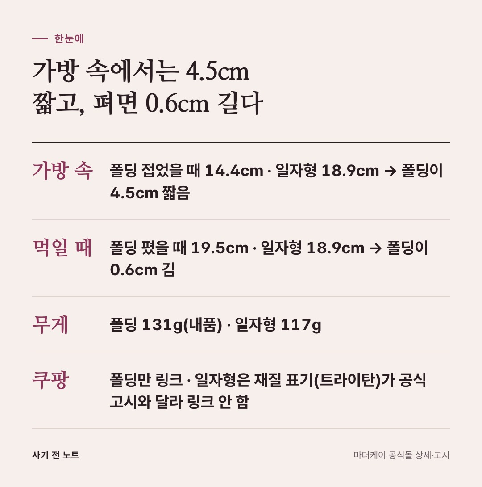
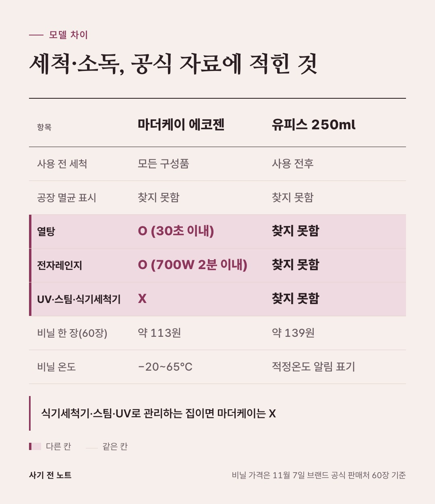

이 게시물은 쿠팡 파트너스 활동의 일환으로, 이에 따른 일정액의 수수료를 제공받습니다.
일회용젖병 고르기, 쓰던 젖꼭지가 맞는지와 소독 방식이 먼저
일회용젖병은 '젖병'보다 지금 쓰는 젖꼭지가 끼워지는지가 먼저입니다. 마더케이 일회용젖병은 아벤트·닥터브라운·유미·헤겐 젖꼭지가 호환표에 X로 적혀 있어서, 이 젖꼭지를 쓰던 집은 젖꼭지까지 새로 사야 해요. 이 칸만 먼저 보면 외출 가방을 줄이려다 젖꼭지 값까지 두 번 쓰는 일을 피할 수 있어요.

쓰던 젖꼭지, 호환표 어느 칸인가요?
마더케이 공식 호환표 기준이에요.
- O: 더블하트·베베그로우·모윰·란시노·스펙트라·그로미미·토비앤몰리·유비맘·유팡·유피스
- X: 닥터브라운·아벤트·유미·헤겐
마더케이도 호환 여부는 제조사 사정에 따라 달라질 수 있다고 덧붙였어요. 젖꼭지와 일회용 비닐은 따로 사야 합니다.

가방 속 길이를 줄이고 싶다면
마더케이 에코젠 폴딩은 접으면 14.4cm, 펴면 19.5cm예요(공식몰 상세). 같은 회사 일자형이 18.9cm라 가방 안에서 4.5cm 짧아집니다. 대신 무게는 폴딩 131g, 일자형 117g으로 14g 무거워요. 접힌 채 수직으로 꺼낸 뒤 돌려서 결합하는 방식이에요.
- 기저귀 가방 세로 길이가 빠듯한 집 → 마더케이 에코젠 폴딩(11월 7일 쿠팡 와우 쿠폰가 19,150원).
- 접었다 펴는 게 번거로운 집 → 같은 회사 일자형(공식몰 11월 7일 14,200원). 다만 쿠팡 상품의 재질 표기(트라이탄)가 공식 고시(바디 에코젠)와 달라 이 글은 쿠팡 일자형에 링크하지 않았어요. 마더케이 호환표는 트라이탄 소재 일회용 젖병과는 호환되지 않는다고도 적었어요.
가방 속 4.5cm를 줄일 집, 마더케이 에코젠 폴딩 — 가격·구매처 보기
비닐·젖꼭지를 한 브랜드로 맞추려면
유피스 간편 일회용 젖병 250ml는 전용 젖꼭지 2입(실리콘, 3개월 이상)과 전용 변온비닐백 60장이 따로 있어요. 메디앙스 공식 판매처 상품명에는 '비닐팩 포함'이 붙어 있지만, 쿠팡 판매 페이지 글자에는 포함 여부가 없어요. 쿠팡에서 산다면 주문 전에 상품 문의로 구성을 받아 두세요.
젖꼭지·비닐을 유피스 전용품으로 맞출 집, 유피스 간편 일회용 젖병 250ml — 가격·구매처 보기
비닐값은 한 달에 얼마나 들어요?
브랜드 공식 판매처 60장 가격(11월 7일)으로 계산하면 한 장에 마더케이 약 113원(6,800원), 유피스 약 139원(8,330원)이에요. 외출해서 하루 두 번 먹이는 집이라면 한 달 60장, 딱 한 팩입니다. 두 브랜드 차이는 한 달 1,530원이라, 비닐값보다는 젖꼭지 호환이 더 큰 갈림길이에요.
'일회용'인데 씻어야 하나요?
네. 두 브랜드 모두 쓰기 전에 세척하라고 적었어요(마더케이는 모든 구성품, 유피스는 사용 전후). 소독 방식은 이 칸을 보세요.
- 마더케이 에코젠 바디: 열탕 30초·전자레인지 700W 2분 이내 O, UV·스팀 소독기·식기세척기 X.
- 유피스 본체 소독 방법: 공식 자료에서 찾지 못했어요.
식기세척기나 스팀 소독기로 젖병을 관리해 왔다면 마더케이는 이 습관과 맞지 않아요.

마더케이 비닐 포장에는 내용물 적정 온도 -20~65℃, 뜨거운 물을 비닐에 바로 붓지 말 것, 재사용 금지가 적혀 있어요. 색으로 온도를 보여 주는 변온 표시는 '참고용'이라고 함께 적혀 있습니다.
확인하지 못한 것: 유피스 본체의 길이·무게·소독 방법. 아이에게 직접 물려 본 글은 아니에요. 숫자는 마더케이 공식몰 상세·고시와 메디앙스 공식 판매처 자료(11월 7일 확인)에서 옮겼고, 쿠팡 가격은 11월 7일 기준이에요.
출처
- 마더케이 에코젠 폴딩 일회용젖병 공식몰: https://www.motherkmall.co.kr/product/detail.html?product_no=2905
- 마더케이 에코젠 일자형 일회용젖병 공식몰: https://www.motherkmall.co.kr/product/detail.html?product_no=459
- 마더케이 일회용 변온 젖병비닐팩 60매 공식몰: https://www.motherkmall.co.kr/product/detail.html?product_no=490